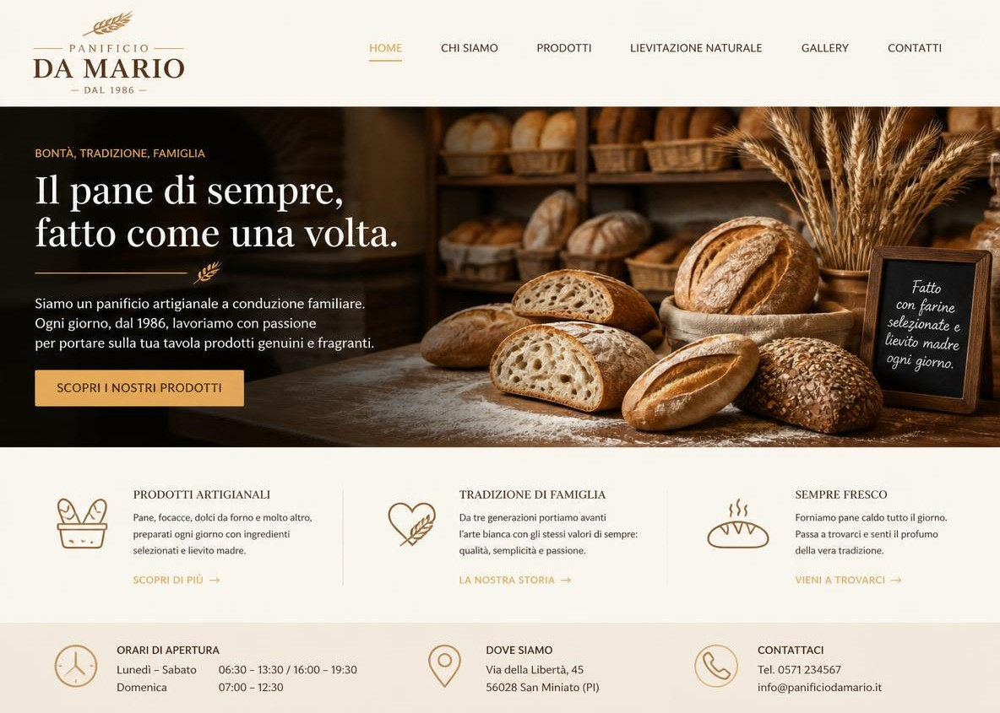
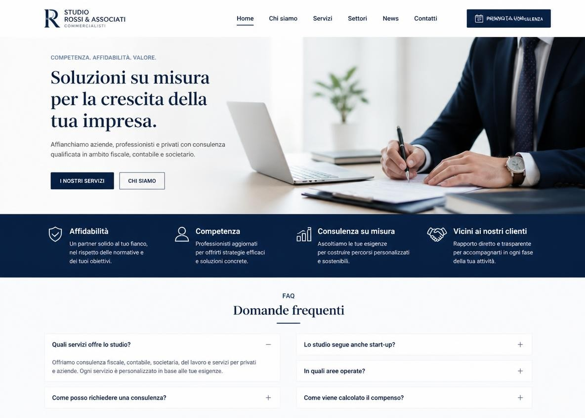
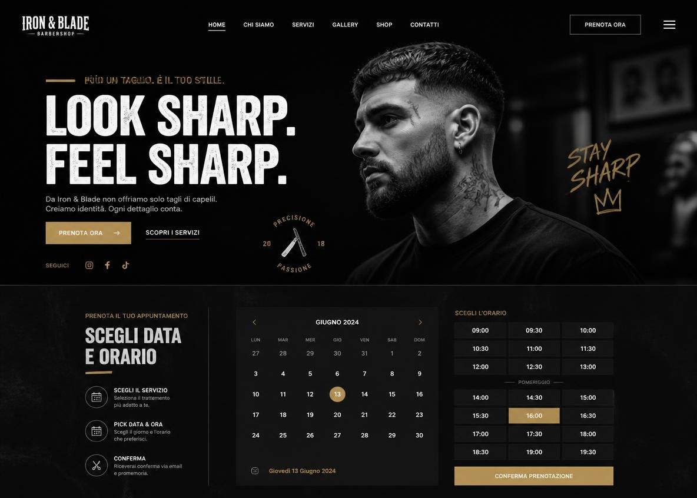

Progetti concept
Questi progetti nascono da brief immaginati, non da clienti reali, ma sono costruiti con la stessa cura che metterei nel tuo.
Panificio Artigianale
(sito vetrina)

La sfida: un forno di quartiere, aperto da tre generazioni, che non aveva alcuna presenza online.
La soluzione: Un sito vetrina che racconta la storia della famiglia e mette in primo piano gli orari e gli indirizzi dei due punti vendita.
Studio di Commercialisti
(sito vetrina)

La sfida: trasmettere competenza e affidabilità a clienti che cercano un professionista serio, non il primo risultato su Google
La soluzione: un sito essenziale, con una sezione FAQ che risponde alle domande più comuni prima di un contatto
Barbershop
(sito vetrina + prenotazioni)

La sfida: un locale dall'identità forte che aveva bisogno di prenotazioni online per eliminare le chiamate a vuoto
La soluzione: sito con calendario integrato, pensato per essere usato al volo in qualsiasi situazione, tra un cliente e l'altro